한국사능력검정시험-심화 (2012-01-14 기출문제)
1. 자료의 (가)에 들어갈 내용으로 옳은 것은? [1점]
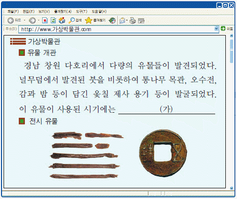
- 중국과의 교류가 활발하였다.
- 무리를 지어 이동 생활을 하였다.
- 계급이 없는 평등한 생활을 영위하였다.
- 가락바퀴를 이용하여 옷을 만들기 시작하였다.
- 자연물에 정령이 있다고 믿는 애니미즘이 등장하였다.
(정답률: 87%)

2. 밑줄 그은‘왕’을 알아보는 탐구 활동으로 가장 적절한 것은? [2점]
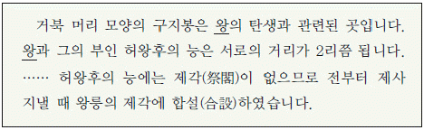
- 대왕암이 조성된 유래를 살펴본다.
- 영일 냉수리비의 내용을 알아본다.
- 천마총에서 출토된 유물을 조사한다.
- 진흥왕의 대외 정복 활동을 찾아본다.
- 삼국유사에 전하는 가락국기를 분석한다.
(정답률: 60%)
3. 자료의 (가)에 들어갈 내용으로 옳은 것은? [3점]
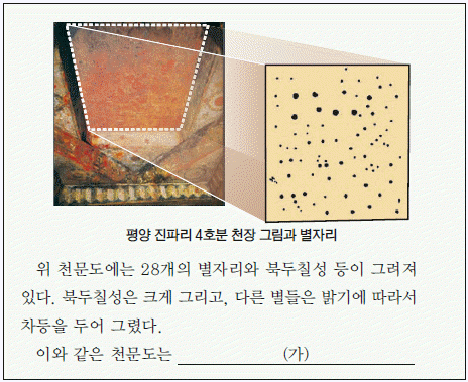
- 혼의와 간의를 이용하여 만들어졌다.
- 수시력을 제작하는 데 영향을 끼쳤다.
- 천상열차분야지도 제작에 영향을 주었다.
- 현존하는 가장 오래된 천문대에서 제작되었다.
- 천재지변을 예측하기 위해 서운관에서 그려졌다.
(정답률: 54%)
4. 밑줄 그은‘왕’의 재위 시기에 볼 수 있는 모습으로 적절한 것은? [2점]
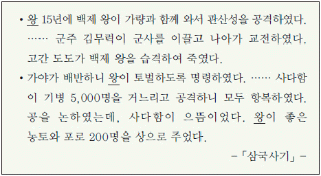
- 순수비를 제작하고 있는 석공
- 불교의 공인을 반대하는 귀족
- 우산국을 정벌하러 떠나는 병사
- 국가로부터 관료전을 지급받는 관리
- 국학에서 유교 경전을 공부하는 6두품
(정답률: 75%)
5. (가), (나) 문화재에 대한 설명으로 옳은 것은?(문제 오류로 실제 시험에서는 2, 5번이 정답 처리 되었습니다. 여기서는 2번을 누르면 정답 처리 됩니다.) [3점]
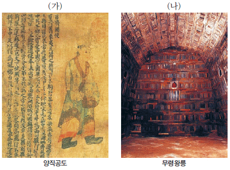
- (가) - 근초고왕 때 제작되어 일본에 전해졌다.
- (가) - 백제가 요서 지방에 진출했음을 나타낸다.
- (나) - 도굴되어 껴묻거리가 남아 있지 않다.
- (나) - 수도가 사비에 있던 시기에 축조되었다.
- (가), (나) - 백제가 중국의 남조와 교류하였음을 알 수 있다.
(정답률: 76%)
6. (가), (나) 국가에 대한 설명으로 옳은 것은? [1점]
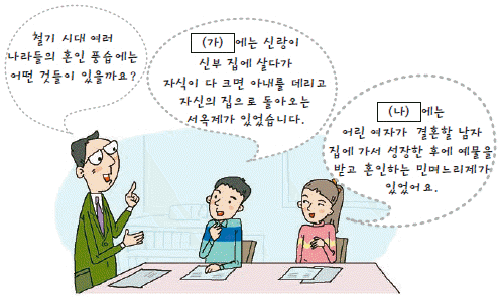
- (가) - 제가들이 다스리는 사출도가 있었다.
- (가) - 천군이 다스리는 신성 지역으로 소도를 두었다.
- (나) - 매년 10월에 무천이라는 제천 행사를 거행하였다.
- (나) - 대가들이 각기 사자, 조의, 선인 등의 관리를 거느렸다.
- (나) - 가족이 죽으면 그 뼈를 추려서 가족 공동 무덤에 안치하였다.
(정답률: 72%)
7. 다음 자료에 관하여 옳은 내용을 발표한 학생을 <보기>에서 고른 것은? [2점]
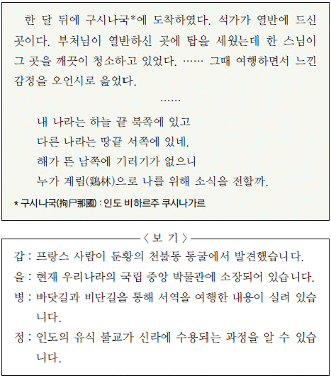
- 갑, 을
- 갑, 병
- 을, 병
- 을, 정
- 병, 정
(정답률: 24%)
8. 지도의 (가)~(마) 지역에서 볼 수 있는 모습으로 적절하지 않은 것은? [2점]
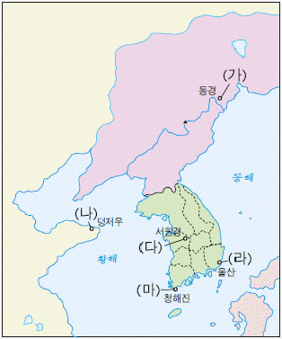
- (가) - 사신을 따라 장사하러 온 일본 상인
- (나) - 신라원에서 불공을 드리는 신라인
- (다) - 민정 문서를 작성하는 촌주
- (라) - 서역의 물건을 가져온 이슬람 상인
- (마) - 동시전에서 시장을 감독하는 관리
(정답률: 55%)
9. (가)~(라) 지도가 제작된 시기순으로 옳게 나열된 것은? [3점]
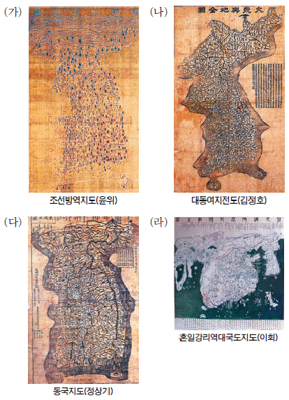
- (가) - (나) - (다) - (라)
- (나) - (가) - (라) - (다)
- (다) - (라) - (나) - (가)
- (라) - (가) - (다) - (나)
- (라) - (다) - (가) - (나)
(정답률: 38%)
10. 다음과 같이 주장한 인물의 활동으로 옳은 것은? [2점]
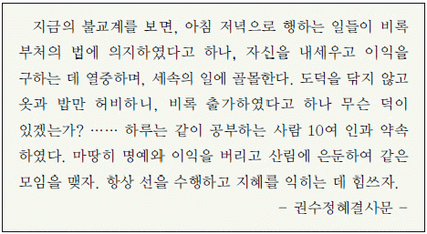
- 귀법사를 중심으로 화엄 사상을 정비하였다.
- 국청사를 중심으로 교단 통합 운동을 펼쳤다.
- 선종을 중심으로 교와 선의 대립을 극복하려 하였다.
- 법화 신앙을 중심으로 강력한 항몽 투쟁을 표방하였다.
- 유불일치설을 주장하여 유교와 불교의 통합을 시도하였다
(정답률: 62%)
11. 밑줄 그은‘이 책’이 처음 간행된 국왕 대의 사실로 옳은 것은? [1점]
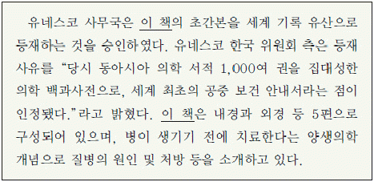
- 남인과 서인 사이에 예송이 일어났다.
- 탕평파를 중심으로 정국이 운영되었다.
- 청을 정벌하자는 북벌 운동이 전개되었다.
- 국왕의 친위 부대인 장용영이 설치되었다.
- 명과 후금 사이에서 중립 외교가 추진되었다.
(정답률: 59%)
12. (가) 시기를 배경으로 역사 신문을 제작할 때 기사의 제목으로 가장 적절한 것은? [2점]
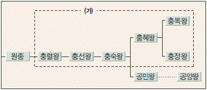
- 심층 분석 - 만적의 난, 원인과 경과
- 해외 탐방 - 만권당, 쟁쟁한 학자들의 난상 토론 현장
- 신간 소개 -「 동국통감」, 편년체 형식의 통사
- 경제 진단 - 건원중보, 새로운 유통 수단으로 등장
- 기획 특집 - 고추와 인삼, 새로운 작물 재배의 확산
(정답률: 46%)
13. (가) 시기에 해당하는 역사적 사실로 옳은 것은? [3점]
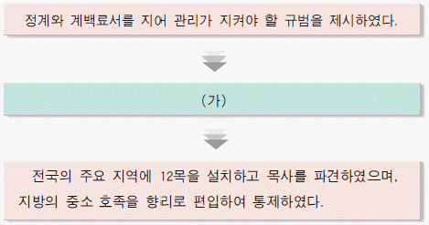
- 국자감을 정비하여 서적포를 설치하였다.
- 전국을 5도와 양계, 경기로 크게 나누었다.
- 5품 이상의 관료에게 공음전을 지급하였다.
- 광덕, 준풍 등의 독자적인 연호를 사용하였다.
- 도련포에서 압록강 입구까지 천리장성을 쌓았다.
(정답률: 55%)
14. (가) 양식으로 만들어진 건축물을 <보기>에서 모두 고른 것은? [2점]
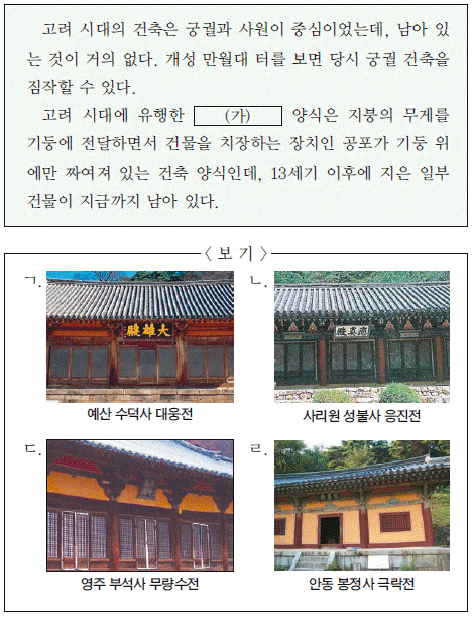
- ㄱ, ㄴ
- ㄱ, ㄹ
- ㄴ, ㄷ
- ㄱ, ㄷ, ㄹ
- ㄴ, ㄷ, ㄹ
(정답률: 69%)
15. 밑줄 그은‘그’의 활동을 <보기>에서 고른 것은? [2점]
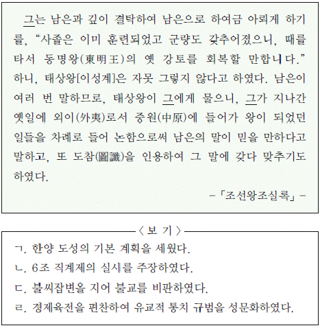
- ㄱ, ㄴ
- ㄱ, ㄷ
- ㄴ, ㄷ
- ㄴ, ㄹ
- ㄷ, ㄹ
(정답률: 53%)
16. 다음 교서를 발표한 국왕 대의 사실로 옳은 것은? [1점]
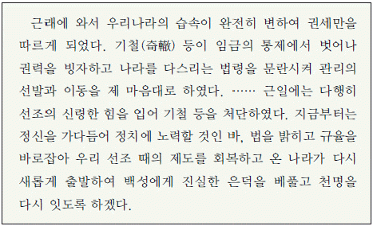
- 신돈을 등용하여 개혁을 단행하였다.
- 박위를 보내 쓰시마 섬을 정벌하였다.
- 사림원을 중심으로 개혁을 단행하였다.
- 전제 개혁을 단행하여 과전법을 마련하였다.
- 화통도감을 설치하여 화약과 화포를 제작하였다.
(정답률: 65%)
17. 다음과 같은 일을 담당한 조선 시대의 관직에 대한 설명으로 옳은 것은? [1점]
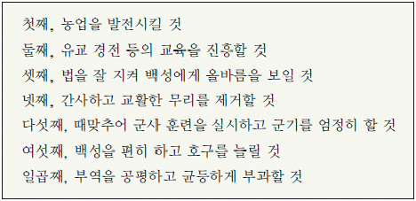
- 지방 행정의 실무를 보좌하였다.
- 관리의 비리를 감찰하고 간쟁에 참여하였다.
- 사신을 수행하면서 대외 무역에 관여하였다.
- 국왕의 교서를 작성하고 경연을 담당하였다.
- 국왕의 대리인으로 전국의 모든 군현에 파견되었다.
(정답률: 63%)
18. 밑줄 그은‘이것’에 대한 옳은 설명을 <보기>에서 고른 것은? [2점]
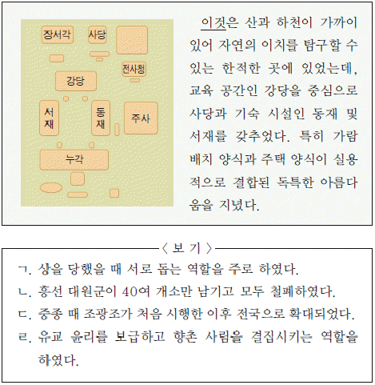
- ㄱ, ㄴ
- ㄱ, ㄷ
- ㄴ, ㄷ
- ㄴ, ㄹ
- ㄷ, ㄹ
(정답률: 64%)
19. 다음 자료에 나오는 조선의 사신에 대한 옳은 설명을 보기에서 모두 고른 것은? [3점]
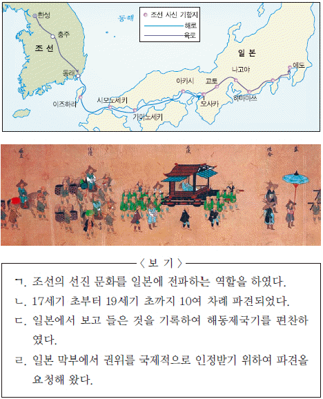
- ㄱ, ㄹ
- ㄴ, ㄷ
- ㄷ, ㄹ
- ㄱ, ㄴ, ㄷ
- ㄱ, ㄴ, ㄹ
(정답률: 54%)
20. 다음과 같은 상업 활동이 이루어진 시기의 경제 상황으로 적절하지 않은 것은? [2점]
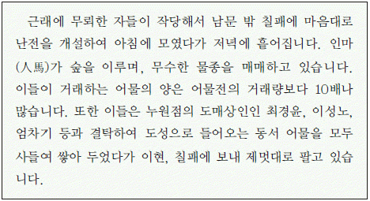
- 덕대가 경영하는 광산 개발이 행해졌다.
- 부역제에 바탕을 둔 관영 수공업이 발달하였다.
- 일정 액수를 소작료로 내는 도조법이 나타났다.
- 모내기법이 일반화되자 제언절목이 반포되었다.
- 환이나 어음 등의 신용 화폐가 점차 보급되었다.
(정답률: 42%)
21. 다음 글에서 소개하고 있는 문화재로 옳은 것은? [2점]
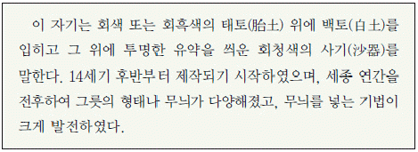
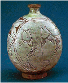
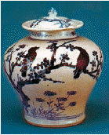
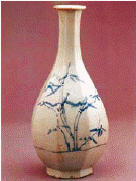
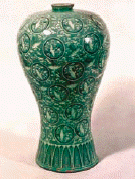
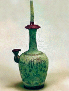
(정답률: 54%)
22. 다음 사건이 일어난 시기의 사회 모습으로 적절하지 않은 것은? [2점]
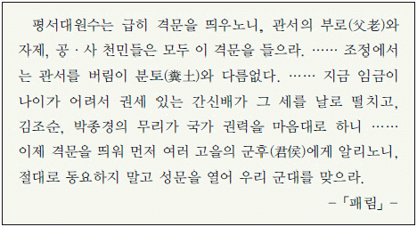
- 삼정의 문란으로 농촌 경제가 파탄되었다.
- 왕의 외척인 세도가문이 권력을 행사하였다.
- 매향 활동을 하는 농민의 공동체 조직이 생겨났다.
- 정감록, 도참 등을 이용한 예언 사상이 널리 유행하였다.
- 관권이 강화되어 수령과 향리의 농민 수탈이 심화되었다.
(정답률: 54%)
23. 다음 사건이 발생한 시기를 연표에서 옳게 고른 것은? [3점](오류 신고가 접수된 문제입니다. 반드시 정답과 해설을 확인하시기 바랍니다.)
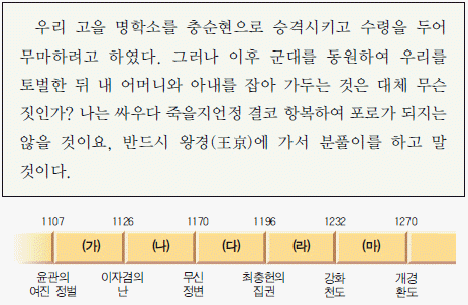
- (가)
- (나)
- (다)
- (라)
- (마)
(정답률: 45%)
24. 다음 글을 통해 알 수 있는 시기의 경제 상황으로 옳지 않은 것은? [2점]
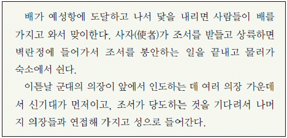
- 송나라에 인삼을 수출하였다.
- 고액 화폐인 은병이 유통되었다.
- 주점, 다점 등의 관영 상점이 있었다.
- 목화 재배 지역이 전국적으로 확산되었다.
- 사원에서 베, 모시 등의 제품을 생산하기도 하였다.
(정답률: 36%)
25. 밑줄 그은‘왕’이 재위한 시기의 사실로 옳은 것은? [2점]
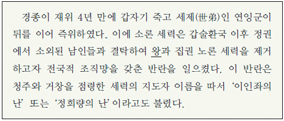
- 천주교도를 탄압하는 신유박해가 일어났다.
- 대동법을 경기도에 시범적으로 시행하였다.
- 규장각을 강화하여 정치 기구로 육성하였다.
- 속대전을 편찬하여 법전 체제를 정비하였다.
- 금위영을 설치하여 5군영 체제를 갖추었다.
(정답률: 52%)
26. (가), (나)로 인해 발생한 사화에 대한 설명으로 옳지 않은 것은? [1점]
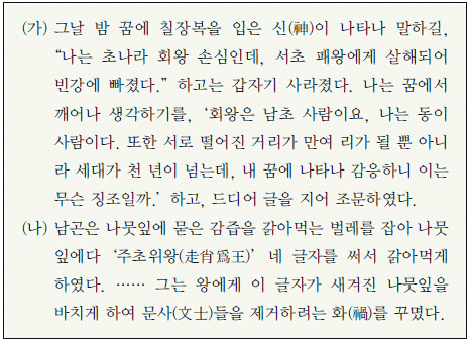
- (가) - 사초에 기록된 내용이 빌미가 되었다.
- (가) - 동인과 서인으로 나뉘는 계기가 되었다.
- (나) - 반정 공신들의 위훈 삭제 문제로 일어났다.
- (나) - 현량과를 통해 발탁된 신진 인사들이 희생되었다.
- (가), (나) - 훈구와 사림의 대립으로 발생하였다.
(정답률: 56%)
27. 다음은 어느 인물의 연보이다. 이 인물에 대한 설명으로 옳은 것은? [2점]
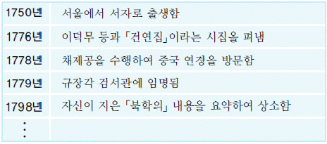
- 의산문답을 저술하여 지전설을 주장하였다.
- 마을 단위로 토지를 분배하여 공동 경작할 것을 제안하였다.
- 생산을 자극하기 위해 절약보다 소비를 권장할 것을 역설 하였다.
- 허생전 등 한문 소설을 지어 양반 문벌 제도의 모순을 비판하였다.
- 발해사를 연구하여 고대사 연구 시야를 만주 지방까지 확대하였다.
(정답률: 57%)
28. 다음은 어느 개혁을 주제로 발행된 가상 잡지의 표지이다. 이 개혁에 대한 설명으로 옳지 않은 것은? [2점]
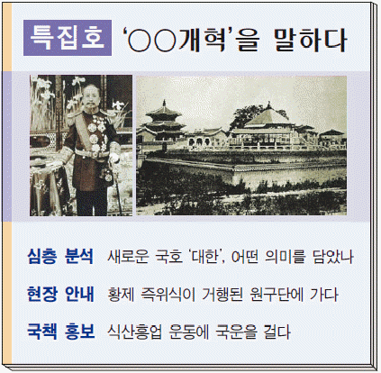
- 원수부를 설치하여 황제권을 강화하였다.
- 양전 사업을 실시하여 지계를 발급하였다.
- 만국공법에 근거한 대한국 국제를 제정하였다.
- 유학생을 파견하여 근대 산업 기술을 배워 오게 하였다.
- 교육 입국 조서를 반포하여 근대식 교육 제도를 마련하였다.
(정답률: 45%)
29. (가) 정당이 주도한 (나)의 결과로 옳은 것은? [3점]
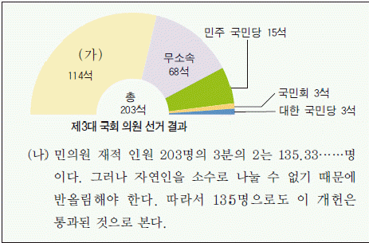
- 의원 내각제 정부가 구성되었다.
- 이승만이 제2대 대통령으로 당선되었다.
- 국회에서 대통령과 부통령이 선출되었다.
- 초대 대통령에 한해 3선 제한이 철폐되었다.
- 대통령이 국회 의원 3분의 1을 추천할 수 있었다.
(정답률: 49%)
30. (가)~(라) 지역의 독립 운동에 관한 설명으로 옳은 것을 <보기>에서 고른 것은? [2점]
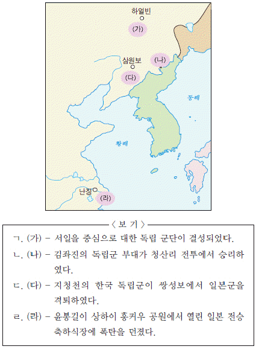
- ㄱ, ㄴ
- ㄱ, ㄷ
- ㄴ, ㄷ
- ㄴ, ㄹ
- ㄷ, ㄹ
(정답률: 42%)
31. 다음과 같은 취지에서 전개된 운동에 대한 설명으로 옳지 않은 것은? [1점]
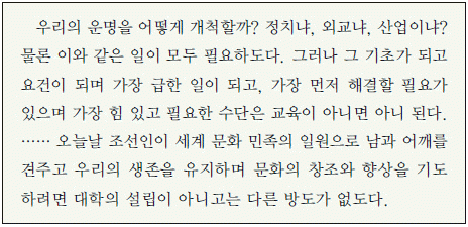
- 서울에서 기성회 발기인 총회를 개최하였다.
- 모금 횡령 혐의를 입은 양기탁의 구속으로 위축되었다.
- ‘한 민족 1천만이 한 사람이 1원씩’이라는 구호를 내세웠다.
- 전국에 지방부를 조직하고 자본금의 모금 활동을 진행하였다.
- 경성 제국 대학 창설 위원회를 설치한 일제의 방해를 받았다.
(정답률: 35%)
32. 다음 자료와 관련된 의병에 대한 설명으로 옳은 것은? [3점]
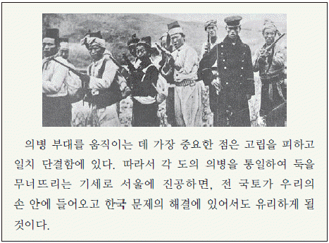
- 단발령 실시에 반발하여 일어났다.
- 평민 출신의 의병장이 처음으로 등장하였다.
- 해산된 군인의 참여로 전투력이 향상되었다.
- 국왕의 권고 조칙에 따라 스스로 해산하였다.
- 러시아 공사관에 있는 고종의 환궁을 요구하였다.
(정답률: 56%)
33. 다음 정책이 시행된 결과 나타난 사실로 옳은 것은? [2점]
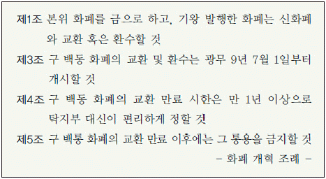
- 동양 척식 주식 회사가 설립되었다.
- 유통 화폐의 부족 현상이 초래되었다.
- 일본으로부터 차관 도입이 감소하였다.
- 조선 은행이 국고 출납 업무를 맡게 되었다.
- 국내 상공업자들의 화폐 자산이 증가하였다.
(정답률: 55%)
34. 다음 자료와 관련된 운동에 대한 설명으로 옳지 않은 것은? [2점]
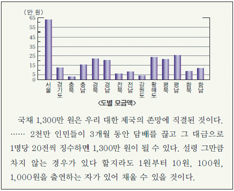
- 여성들의 적극적인 모금 활동이 있었다.
- 대구에서 시작되어 전국적으로 확산되었다.
- 일본, 러시아 등 해외 동포들도 동참하였다.
- 독립신문의 주도로 모금 활동이 전개되었다.
- 일제 통감부의 방해와 탄압으로 실패하였다
(정답률: 49%)
35. 다음은 어느 서적의 목차이다. (가)~(마)에 들어갈 내용으로 옳은 것은? [1점]
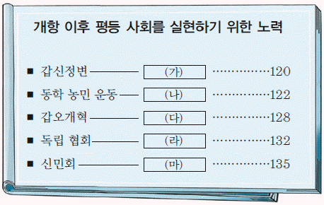
- (가) - 노비 문서 소각과 과부의 재가 허용
- (나) - 중대 범죄의 공판과 피고의 인권 존중
- (다) - 신분제 혁파와 인신 매매 금지
- (라) - 문벌 폐지와 인민 평등권 제정
- (마) - 연좌제 폐지와 조혼 금지
(정답률: 57%)
36. 다음 자료와 관련된 민족 운동에 대한 설명으로 옳은 것은? [3점]
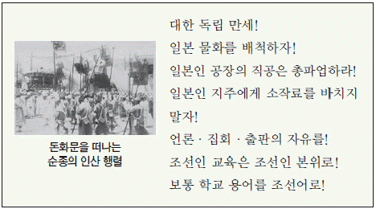
- 원산 총파업의 영향을 받아 전개되었다.
- 민족 유일당 운동의 계기를 마련하였다.
- 민족 자결주의와 외교 독립론을 제기하였다.
- 일제가 문화 통치로 전환하는 배경이 되었다.
- 신간회의 후원 속에 전국적 운동으로 확산되었다.
(정답률: 53%)
37. 다음은 어느 독립운동가의 주요 약력이다. 이 인물의 활동으로 옳은 것은? [2점]
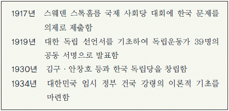
- 조선 건국 준비 위원회를 결성하였다.
- 국제 연맹에 위임 통치 청원서를 제출하였다.
- 미 군정이 지원한 좌우 합작 위원회에 참여하였다.
- 민중의 직접 혁명을 주장하는 조선 혁명 선언을 발표하였다.
- 개인·민족·국가 간의 평등을 전제로 하는 삼균주의를 제창하였다.
(정답률: 45%)
38. 다음은 어느 지역에 관한 기록이다. 각 시대에 이 지역에서 있었던 역사적 사실을 보기에서 옳게 고른 것은? [2점]
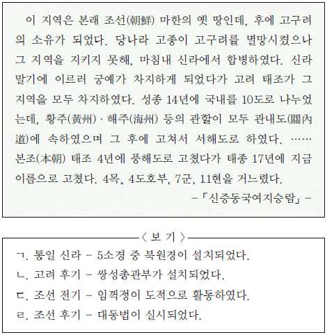
- ㄱ, ㄴ
- ㄱ, ㄷ
- ㄴ, ㄷ
- ㄴ, ㄹ
- ㄷ, ㄹ
(정답률: 22%)
39. 그래프에 나타난 시기의 경제 상황으로 옳은 것은? [2점]
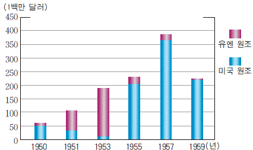
- 농산물의 수입을 자유화하는 조치가 취해졌다.
- 석유 파동으로 수입이 늘고 수출이 줄어들었다.
- 삼백 산업을 중심으로 소비재 산업이 발전하였다.
- 저유가, 저금리, 저달러 현상으로 경제 호황을 누렸다.
- 중화학 공업을 중심으로 수출 위주의 경제 정책을 시행하였다.
(정답률: 65%)
40. (가), (나) 주장이 제기된 공통의 배경으로 옳은 것은? [3점]
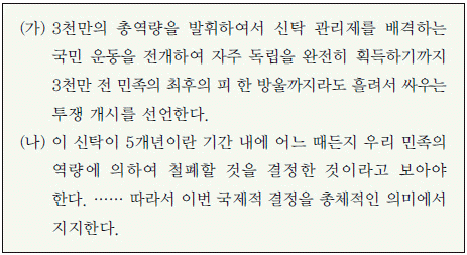
- 제2차 미·소 공동 위원회가 결렬되었다.
- 국제 연합이 남한 정부를 합법 정부로 인정하였다.
- 좌우 합작 위원회가 좌우 합작 7원칙을 발표하였다.
- 모스크바 3국 외상 회의의 결정 내용이 국내에 알려졌다.
- 미국과 소련이 미·소 공동 위원회에 참여할 수 있는 단체 문제로 대립하였다.
(정답률: 63%)
41. 다음 시대를 배경으로 한 영화 시나리오를 작성한다고 할 때 적절한 장면을 <보기>에서 고른 것은? [2점]
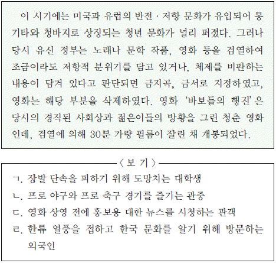
- ㄱ, ㄴ
- ㄱ, ㄷ
- ㄴ, ㄷ
- ㄴ, ㄹ
- ㄷ, ㄹ
(정답률: 60%)
42. 그래프에 나타난 변화를 알아보기 위한 탐구 활동으로 적절하지 않은 것은? [2점]
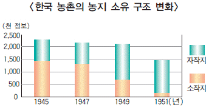
- 제헌 국회가 제정한 농지 개혁법을 찾아본다.
- 미 군정청이 농민들에게 매각한 귀속 농지의 양을 살펴본다.
- 농지 개혁에 대비한 지주들의 대응 방식을 종합하여 분석 한다.
- 농가 1가구당 법적으로 소유할 수 있었던 토지 소유량을 알아본다.
- 소작농이 기한부 계약에 따라 관습적 경작권을 잃게 된 배경을 조사한다.
(정답률: 45%)
43. 다음은 어느 인물에 대한 심문 기록이다. (가)에 들어갈 내용으로 옳은 것은? [1점]
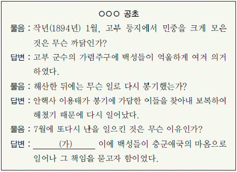
- 강제로 조약을 체결하여 외교권을 박탈하였다.
- 궁궐에 난입하여 국모를 시해하고 임금을 핍박하였다.
- 다량의 곡물이 외국으로 유출되어 농민들이 피폐해졌다.
- 각 부처에 일본인 고문관을 배치하여 내정에 간섭하였다.
- 일본이 개화를 구실로 군대를 이끌고 왕궁을 점령하였다
(정답률: 52%)
44. 다음과 같은 남북 합의 사항의 결과로 옳은 것은? [2점]
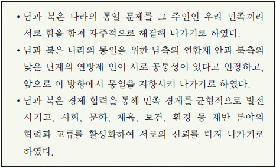
- 개성 공업 단지가 조성되었다.
- 남북 조절 위원회가 구성되었다.
- 남북이 동시에 유엔 회원국이 되었다.
- 한반도 비핵화 공동 선언이 채택되었다.
- 최초의 이산가족 교환 방문이 실현되었다.
(정답률: 40%)
45. (가), (나)에 담긴 역사의식에 대한 설명으로 옳은 것은? [2점]
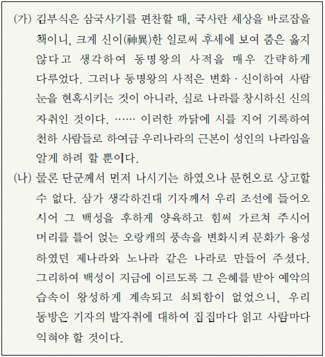
- (가) - 우리나라를 소중화로 파악하고 있다.
- (가) - 민족적 자주 의식을 바탕으로 전통 문화를 이해하였다.
- (나) - 세조의 반정으로 집권한 세력의 역사의식이 나타나 있다.
- (나) - 실증적 역사 서술로 성리학적 세계관을 비판하였다.
- (가), (나) - 몽골 침략기 우리 민족의 자주성이 반영되어 있다.
(정답률: 56%)
46. (가) 국가와 관련된 사실로 옳은 것은? [2점]
- 조선과 상의하여 백두산 정계비를 건립하였다.
- 구미 위원부의 외교적 독립 운동을 지원하였다.
- 임오군란 직후 조선의 내지 통상권을 획득하였다.
- 기유약조를 맺어 전쟁 이후 끊어진 국교를 재개하였다.
- 일본과의 전쟁에서 패한 후 포츠머스 조약을 체결하였다.
(정답률: 51%)
47. 밑줄 그은‘이것’을 두는 위치와 그 명칭이 바르게 연결된 것은? [2점]
- (ㄱ) - 용마루
- (ㄴ) - 추녀마루
- (ㄴ) - 내림마루
- (ㄷ) - 추녀마루
- (ㄷ) - 내림마루
(정답률: 37%)
48. (가) 사건에 대한 탐구 활동으로 가장 적절한 것은? [1점]
- 한성 조약의 체결 과정을 파악한다.
- 오페르트 도굴 사건의 결과를 조사한다.
- 조선책략의 유포가 끼친 영향을 살펴본다.
- 흥선 대원군의 천주교 박해 사건을 알아본다.
- 치외법권을 인정한 최초의 근대적 조약을 찾아본다.
(정답률: 73%)
49. 다음 자료를 발행한 단체의 활동으로 옳은 것은? [2점]
- 교통국을 두어 국내외의 정보를 수집하였다.
- 조선 혁명 간부 학교를 세워 독립군을 양성하였다.
- 블라디보스토크에 대한 광복군 정부를 조직하였다.
- 외교 활동의 일환으로 대한인 국민회를 설치하였다.
- 대성 학교와 오산 학교를 세워 교육 운동을 전개하였다.
(정답률: 45%)
50. 다음 자료에 나타난 지역에 관한 탐구 활동으로 적절하지 않은 것은? [2점]
- 세종실록지리지의 기록을 찾아본다.
- 신라 지증왕 때 차지한 지역을 조사한다.
- 청·일 전쟁 때 일본이 획득한 지역을 알아본다.
- 숙종 때 안용복이 일본에 건너간 배경을 살펴본다.
- 대한 제국 시기에 울도 군수가 관할한 지역을 파악한다.
(정답률: 54%)
이미지에서 보이는 인물들은 무리를 지어 이동하고 있으며, 이는 고조선 시대의 삼한시대 이전에는 이동 생활이 일반적이었기 때문입니다.